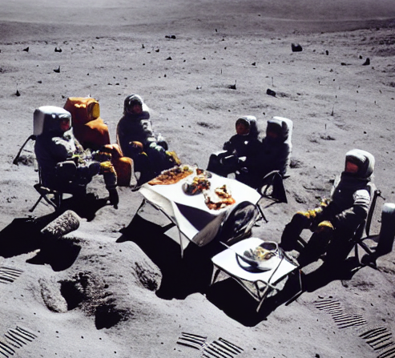
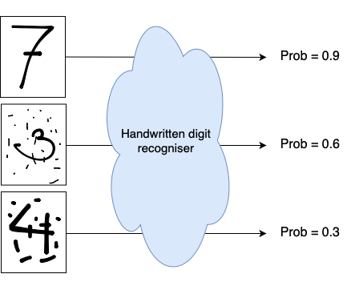
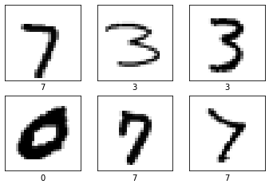
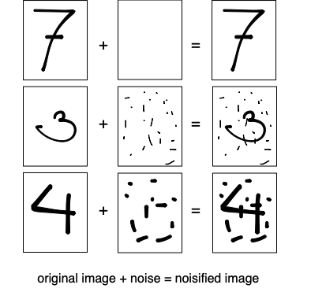
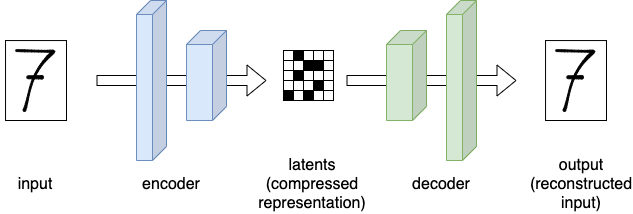
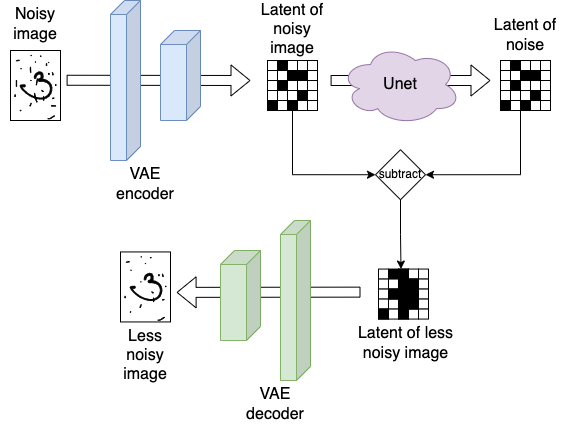
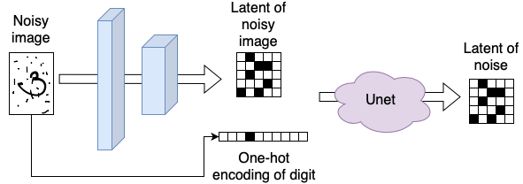
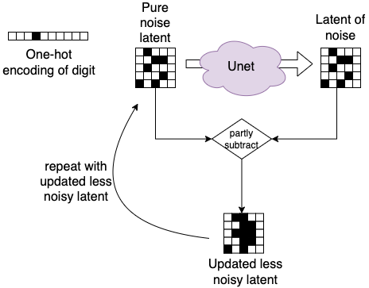
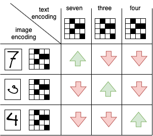
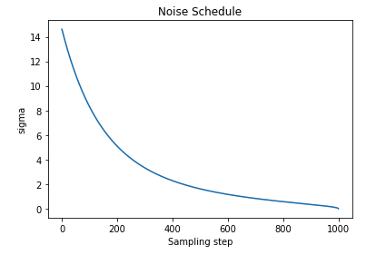

Stable Diffusion, a generative deep learning algorithm developed in 2022, is capable of creating images from prompts. For example, when presented the prompt: A group of people having lunch on the moon, the algorithm creates the following image:

And although this image isn’t perfect and can be improved by more detailed prompting, it’s pretty amazing that it took less then 30 seconds to create this image, and the depiction is a fairly accurate representation of the prompt: The algorithm “imagined” that people on the moon should be wearing space suits, a good idea indeed! All have gathered around a table an are sitting on some kind of chair, which is generally how people eat their lunch. Last but not least, the background looks pretty moonish. Not bad at all!
Now let’s look at the main components involved in creating this image, this follows largely the steps of Lesson 9 of Deep Learning for Coders
Intuition
Consider some kind of black box system that takes an input, does “something” and then gives an output. Let’s say it takes an image of a handwritten digit as input, and outputs the probability that the image is indeed a hand written digit. Visually something like this:

In statistics, we would call this a probability density function. It’s a function that takes data as input, and gives the probability that
- if the data is coming indeed from the distribution,
- then what’s the probability that we see this data
Applied to our use-case: if the image is indeed from this distribution of images that represent images of hand written digits, what’s the probability that we observe the presented image?
As seen from the figure above: with such a system, we could start with an image of pure noise and iteratively do:
- get the probability \(p_0\) of the image being a handwritten digit from the black box system
- change the value of one of the pixels at random
- get the new probability \(p_1\) whether the image is a handwritten digit from the black box system
- when \(p_1 > p_0\) update the image with the changed pixel value
If we follow this procedure long enough, we would gradually update all the pixel values and the image will start to resemble a handwritten digit.
In principle, this is the simple intuition behind stable diffusion.
The main component: Unet
So how are we going to create this magic system which will give the probability that an image is depicting a handwritten digit? Let’s start with the training data, we need lots of images that depict handwritten digits. Something like this:

Since these images represent actual hand-written digits, the system will need to output a near 1.0 probability for these images. But how do we get images that “somewhat” represent handwritten digits and will result in lower probability values? We somehow have to “crappify” these existing images. We can do by using the images we already found and sprinkle them with different amounts of noise. The more noise we add, the less the image will resemble a handwritten digit. Visually:

Now we can train a network which we feed the noisified images as input and use the noise image as label. So instead of predicting the probability that an image depicts a handwritten digit, the model will predict the noise. By using a simple MSE loss on the actual noise (labels) and the predictions the model will learn how to predict the noise from looking at a noisified images.
The idea behind this model is that once this model is trained, we could run inference on some random noise. The model will give us a prediction of all the noise in the image, which when removed from the input, renders an image of a digit.
It turns out that this process works much better if, instead of removing all the noise that was predicted by the model at once, we just remove a little bit of the noise that was predicted. This way, we end up with an image which is just a bit less noisy then what we started with. We then feed this less noisy image again into our network, and thus iteratively remove more and more noise from the image, until after a certain amount of steps (50 for example) we end-up with an image that is free of noise.
One model architecture that is takes images as input and also outputs images is called a Unet and forms the first component of our Stable Diffusion system:
| Component | Inputs | Outputs |
|---|---|---|
| Unet | Noisy images | Noise |
Compression: Variational Autoencoder
When working with images in neural networks we often reduce the resolution of images or use smaller patches of the original image to make sure everything fits on the GPU. With stable diffusion, we naturally want to output images of high resolution, so we need either very large GPUs, or we can use a compression trick by making use of a Variational Autoencoder (VAE).
A VAE is a network architecture having an encoder and a decoder. In the encoder the image input is being transformed through a series of convolutional layers into a compressed representation, the latent. In the decoder this compressed latent is passed through a series of layers that are trying to reconstruct the original image. Visually:

This might look like a boring network architecture at first. But it’s actually a very neat way to compress things: We can feed this model all the different noisified images mentioned earlier, and use an MSE loss on the inputs and outputs. This will train the model to create compressed representations of our images (the latents) that can be used by the decoder to recreate the original image. This means that the latent representation carries close to the same amount of “information” as our full-size images.
With this, we can now train the previously discussed Unet on all the latents instead of the full size images!
During inference the combined architecture looks like this: we run any input first through the encoder returning a highly compressed version of our input (i.e. the latents). We then run it through the Unet, which will output a latent representation of the noise. If we (partly) subtract the noise latent from the noisy image latent, we end up with a latent representation of our image which is a bit less noisy then what we started with. Finally, to move from latent representation to full-size images, we can use the decoder of the VAE. Visually:

To summarize:
| Component | Inputs | Outputs |
|---|---|---|
| VAE encoder | Noisy image | Noisy image latents |
| Unet | Noisy image latents | Noise latents |
| VAE decoder | Noise latents | Noise |
Prompting: CLIP
So how can we create prompting? Let’s start simple and imagine we just want to specify which handwritten digit we would like to generate, so any number between 0 and 9. We could do this by training the Unet not only on the noisy image (input) and noise (output), but instead also give it a representation of the digit we sprinkled the noise on as input. The most generic way to do this, would be to create a one-hot encoded representation of the digit, visually:

To create an image depicting the digit “three” from pure noise, we would then start with a random noise latent and feed it together with the one-hot encoded representation of the digit into the Unet. This way, the Unet is “guided” to create an image of digit “three” and not just any image, visually:

To continue, how are we going to scale this for any text prompt besides our 10 digits? We can’t possibly create a one-hot encoding of any possible prompt, that would make our vector infinitely large. Instead, we want to compress the encoding in some finite, high dimensional space, e.g. we want to create an embedding encoding of our prompt.
To create these embeddings, we first of all need again lots of data. For example by capturing a lot of images from the internet, these image generally have a textual description in the HTML tag.
We can feed the text and images into two separate encoders. These encoders take the text and image respectively and output a vector. Next, we can align the vector representations in a matrix and take the dot-product between them. We want the text and image vectors of the same “object” to align, this means their dot-product should be large. Also, we want the vectors of different objects to not align, so their dot-product should be small. Visually:

A loss function that does exactly this, is called the Contrastive Loss. And the model described here is called Contrastive Language Image Pre-training (CLIP).
During inference, we can use the trained text-encoder and apply it to the prompt. The outputted embedding can then be used as the encoding we feed into our Unet in combination with the noisy image latent.
To summarize:
| Component | Inputs | Outputs |
|---|---|---|
| CLIP text encoder | Prompt | Embedding |
| VAE encoder | Noisy image | Noisy image latents |
| Unet | Noisy image latents + Prompt embedding | Noise latents |
| VAE decoder | Noise latents | Noise |
Noise scheduler
Above it was stated, that “different” amounts of noise are sprinkled on our images during training, and during inference “some” amount of noise is being subtracted from the image. In the next post, which will be a “code” version of this post, we will see more how this exactly works, but let’s introduce one more concept here:
To formalize the amounts of noise we will use something called a noise schedule, which maps an integer value (called the timestep \(t\)) to an amount of noise we will add to our image. This noise schedule is a monotonically decreasing function of \(t\), so large values of \(t\) will add a small amount of noise and small values of \(t\) add a large amount of noise. A typical noise schedule looks something like this:

With this noise schedule, we can pick different amounts of noise during training and add it to the images in the batch. Additionally, we will feed the noise parameter to the Unet, so that it knows how much noise was added to the image. This sould make it easier for the model to reconstruct the noise.
To summarize:
| Component | Inputs | Outputs |
|---|---|---|
| CLIP text encoder | Prompt | Embedding |
| VAE encoder | Noisy image | Noisy image latents |
| Unet | Noisy image latents + Prompt embedding + Noise level | Noise latents |
| VAE decoder | Noise latents | Noise |
That’s it for now! If you came this far, I hope you enjoyed it. For me, it helped a lot in my understanding by writing all this down. In the next blog post, we will have a look at how these concepts translate into code by making use of HuggingFace libraries such as diffusers and transformers